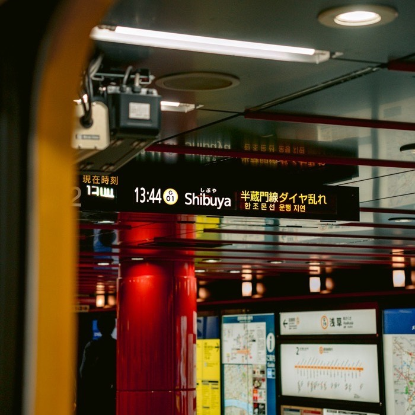

Tokyo On Foot
02
NORI
仲間と
乗って、そろえる。

NORI
How
あそびかた
01
カードを引く。アプリでも、手持ちのトランプでも
02
出た数だけ、上りか下りに乗る。端で折り返す
03
着いた駅を押す。盤のマスが埋まる
Cards
ふだ
A
1駅
2–10
その数
J
11駅
Q
12駅
K
13駅
JOKER
路線の好きな駅
Time
じかん
2h
4h
8h
駅の盤
3×3
4×4
5×5
路線
1〜2本
3〜4本
全部
お題
なし
3×3
4×4
相手の盤
最後の20分は見えない
最後の40分
最後の80分
Score
とくてん
駅pt
×
(お題pt + 1)
駅pt＝埋めたマス＋ビンゴの列×3。お題pt＝達成した数＋ビンゴの列×3
Team
チーム
人数
2チーム以上。自分でチームを選ぶ
開始
誰が押してもよい
終了
時間がきたら自動
写真
アプリには残らない。LINE で
遊ぶ